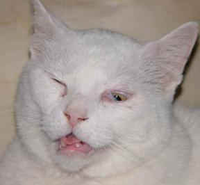

I'm a software developer based in Baltimore, Maryland. Or at least that's what people pay me to do. I've done a lot of other things besides software development and I've been a lot of things besides a software developer. But developing software has been what I've made the most money doing, and that seems to be what most people care about--what do you make the most money doing?
If you're a nerd, I can go into more detail about that. I mostly write Python and Ruby these days. I've made the most money writing Python and Ruby. I'm an old-school Perl veteran, but we don't talk much about that anymore.
I'm a Linux user. Mostly Mint/Cinnamon. You should be too...
Sometimes people pay me to make computers do things. I'm pretty good at that. Sometimes I do it for free too, if I like the project enough. Got something you want me to make a computer do? We can talk...
I went to a good engineering school, and my undergraduate degree is in mathematics. I went to a good graduate school for mathematics and program-hopped my way into studying computer science before concluding that I didn't need to complete an advanced degree to work in the field unless I wanted to teach. As much as I liked teaching, I didn't want to do it for the rest of my life. Still, Mathematics is my first love, at least academically.
Sometimes I do street photography. I've taken a lot of photos of graffiti in Baltimore. You can find these on my Flickr account at https://www.flickr.com/photos/99753978@N03/ - citythatreads. There are over 30,000 photos I've taken on the street at that account. Most of them are of graffiti, posters, signs, and other markings. Mostly words on the street, generally ephemeral. Here today, gone tomorrow.
My street photography project also led to a sort of zine project--fifty volumes of about 200 pages each, two large indexes, and a special issue featuring Ocean City, MD. You can read more about that project here: City That Reads: Baltimore Signs and Markings
I've written a fair bit of code in my spare time for various playful (or sometimes halfway-serious) gigs or projects. I've given these endeavors the over-arching name "Delightful Bird Projects", although few of them involve birds--so far. You can read all about why I chose the name here.
https://github.com/patrickswickard is my github repository. That's chock full of personal projects that I've mostly done for fun. Some are simple, some are elaborate. Some are serious, some are fun, most are a mix of the two. There's a lot of chaotic, messy code on there that I'm not proud of. If you poke around you'll see how the sausage gets made, and sometimes it isn't pretty. I try to explain myself in the README files, and some of them may actually have code that you could use as a user.
I'll flesh this out in more detail later. Hey, it's a start...